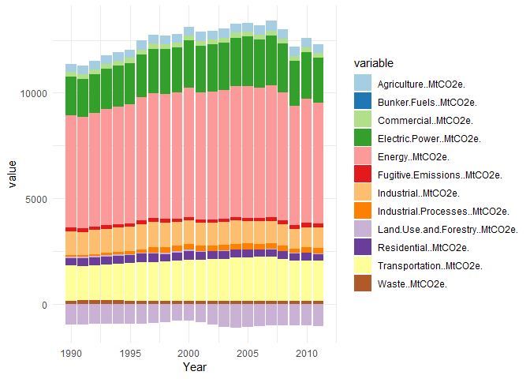
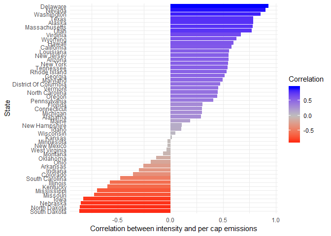
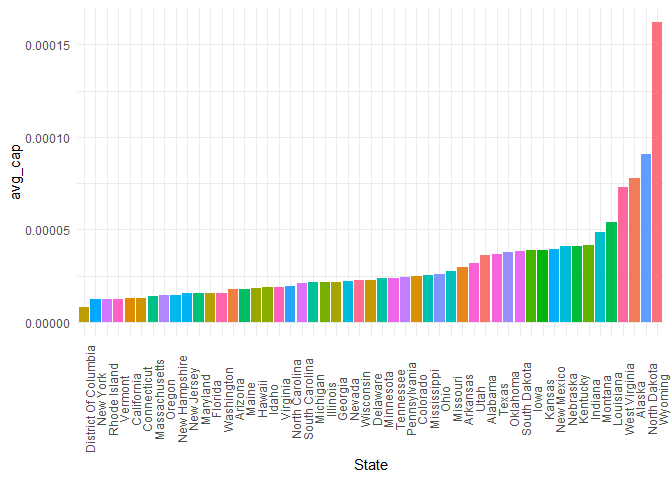
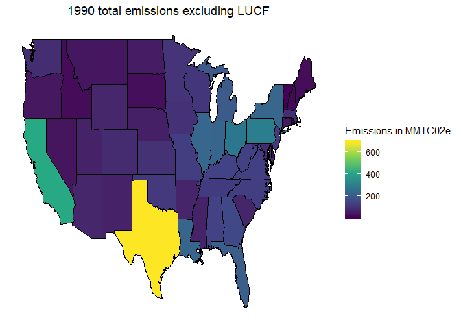

Data Analysis: US State Greenhouse Gas Emissions 1990-2010 Visualized
In celebration of Scott Pruit resigning from the EPA, we’ll be examining US state greenhouse gas emissions from 1990-2010. You can download the data yourself at http://datasets.wri.org/dataset/cait-us-states-greenhouse-gas-emissions
So what exactly are greenhouse gases? Well, there are several of them, of which carbon dioxide is the most well known and potentially dangerous because it lingers in the atmosphere for thousands of years. Other important greenhouse gases are methane, nitrous oxide and fluorinated gases (f-gases).
Why do we care about the amount of C02 in our atmosphere? Well, if you compare the amount found today to that of 200 years ago, the concentration has nearly doubled from 280 ppm to 400 ppm. That doesn’t seem normal.
Why is there more C02 in our atmosphere today? In very simplified terms, what happens is that through the burning of carbon-containing fossil fuels oxygen reacts with carbon, creating C02 molecules. If you remember remember from your high school chemistry class (I certainly don’t…), combustion requires oxygen and it’s via the presence of this oxygen with the pre-existing carbon that creates C02. C02 is special because it then stays in our atmosphere until it is taken up again by plants and oceans and even rocks–given enough millenia. We call this process the Carbon Cycle.
Another high school chemistry fun fact: through the process of photosynthesis plants separate carbon from oxygen and thereby reduce the amount of C02 in the air around us. More forests and jungles = fewer C02 molecules floating around in our atmosphere that contribute to the “greenhouse effect,” where heat energy from the sun gets trapped in our atmosphere and thereby raises global temperatures. http://www.europarl.europa.eu/RegData/etudes/BRIE/2015/559498/EPRS_BRI%282015%29559498_EN.pdf
A few other useful tidbits before we begin.
- Greenhouse gases are typically measured in Metric Tons of C02 Equivalent(MTC02e). For comparison, 25,000 MTC02e is about the amount of emissions needed to power 2,600 homes for one year. The emissions numbers in this report are given in Million Metric Tons of C02 Equivalent.
- Fugitive emissions are gases and vapors from leaks, usually in industrial applications
- Land Use Change and Forestry (LUCF) is related to crop burning, logging, and reforesting, so it’s possible for states to have negative emissions if they are planting lots of trees. This is important because if you don’t count LUCF, then countries with lots of slash and burn deforestation–Indonesia and Brazil–aren’t accurately represented. Once you include those CO2 emissions, they fare much worse. But generally, most countries LUCF/non-LUCF emissions are quite similar.
- Total greenhouse emissions are calculated using the formula: Emissions MTCO2+ CH4 Emissions (MTCO2 Eq.) + N2O Emissions (MTCO2 Eq.)
- Bunker fuels are fuel emissions from ships and airplanes
If you’re interested in learning more about how California is dealing with greenhouse emissions, this paper has lots of useful information: https://www.energy.ca.gov/renewables/tracking_progress/documents/Greenhouse_Gas_Emissions_Reductions.pdf
And if you’d like to compare different countries’ greenhouse gas emissions, this report has lots of interesting graphs: http://www.wri.org/blog/2014/11/6-graphs-explain-world%E2%80%99s-top-10-emitters Long story short, China is the worst emitter now, though in terms of cumulative pollution since the Industrial era, the USA is the worst.
The transportation sector remains the largest source of GHG emissions in 2015, accounting for 37% of California’s GHG inventory. Contributions from the transportation sector include emissions from combustion of fuels sold in-state that are used by on-road and off-road vehicles, aviation, rail, and water-borne vehicles, as well as a few other smaller sources.* Figures 6a and 6b show the trends in emissions and fuel sales for light-duty gasoline and heavy-duty diesel vehicles. Total fuel combustion emissions, inclusive of both fossil component (orange line) and bio-component (yellow shaded region) of the fuel blend, track trends in fuel sales.
Let’s load up the data
library(tidyverse)
library(plotly)
df <- readxl::read_xlsx('emissions.xlsx', skip = 3)
#We don't need the overall US stats
df <- df[df$State != 'United States',]
#The make.names() function makes sure column names are valid. Will save you from headaches later.
df <- df %>%
rename_all(funs(make.names(.)))
head(df)
## # A tibble: 6 x 23
## State Year Total.GHG.Emissions~ Total.GHG.Emission~ Total.CO2..exclud~
## <chr> <dbl> <dbl> <dbl> <dbl>
## 1 Alaba~ 1990 138. 81.3 112.
## 2 Alaska 1990 45.5 14.2 35.9
## 3 Arizo~ 1990 70.3 77.3 63.3
## 4 Arkan~ 1990 67.0 21.0 52.2
## 5 Calif~ 1990 421. 392. 369.
## 6 Color~ 1990 82.5 70.9 65.9
## # ... with 18 more variables: Total.CH4..MtCO2e. <dbl>,
## # Total.N2O..MtCO2e. <dbl>, Total.F.Gas..MtCO2e. <dbl>,
## # Energy..MtCO2e. <dbl>, Industrial.Processes..MtCO2e. <dbl>,
## # Agriculture..MtCO2e. <dbl>, Waste..MtCO2e. <dbl>,
## # Land.Use.and.Forestry..MtCO2e. <dbl>, Bunker.Fuels..MtCO2e. <dbl>,
## # Electric.Power..MtCO2e. <dbl>, Commercial..MtCO2e. <dbl>,
## # Residential..MtCO2e. <dbl>, Industrial..MtCO2e. <dbl>,
## # Transportation..MtCO2e. <dbl>, Fugitive.Emissions..MtCO2e. <dbl>,
## # State.GDP..Million.US...chained.1997.2005.. <dbl>,
## # Population..People. <dbl>,
## # Total.Energy.Use..Thous..tonnes.oil.eq...ktoe.. <dbl>
We will calculate emissions intensity by dividing the Total Emissions by the State’s GDP. This will tell us per dollar of GDP (a rough estimate of the value of goods/services produced in the state), how much greenhouse gas is emitted.
df$em_int <- df$Total.GHG.Emissions.Excluding.LUCF..MtCO2e./df$State.GDP..Million.US...chained.1997.2005..
Simiarly, we’ll divide the Total Emissions by the state’s population to estimate per person, how much greenhouse gases are emitted. Note: this shouldn’t be taken to imply actual normal people are emitting these gases, but it gives us a rough estimate of the types of jobs people have in these states. For example, states burning lots of coal for electric energy should have a higher per capita emission of greenhouse gases.
df$per_cap <- df$Total.GHG.Emissions.Excluding.LUCF..MtCO2e./df$Population..People.
str(df[,1:5])
## Classes 'tbl_df', 'tbl' and 'data.frame': 1122 obs. of 5 variables:
## $ State : chr "Alabama" "Alaska" "Arizona" "Arkansas" ...
## $ Year : num 1990 1990 1990 1990 1990 1990 1990 1990 1990 1990 ...
## $ Total.GHG.Emissions.Excluding.LUCF..MtCO2e.: num 137.9 45.5 70.3 67 420.7 ...
## $ Total.GHG.Emissions.Including.LUCF..MtCO2e.: num 81.3 14.2 77.3 21 391.5 ...
## $ Total.CO2..excluding.LUCF...MtCO2e. : num 112.1 35.9 63.3 52.2 368.6 ...
So we end up with 1122 observations of each state on 23 variables from the years 1990-2010.
Data wrangling for plotting
Generally, turning your data into ‘long’ format is best for plotting with ggplot. We’ll do that now.
df_gath <- df %>%
gather(-State,-Year, key='variable', value='value')
head(df_gath)
## # A tibble: 6 x 4
## State Year variable value
## <chr> <dbl> <chr> <dbl>
## 1 Alabama 1990 Total.GHG.Emissions.Excluding.LUCF..MtCO2e. 138.
## 2 Alaska 1990 Total.GHG.Emissions.Excluding.LUCF..MtCO2e. 45.5
## 3 Arizona 1990 Total.GHG.Emissions.Excluding.LUCF..MtCO2e. 70.3
## 4 Arkansas 1990 Total.GHG.Emissions.Excluding.LUCF..MtCO2e. 67.0
## 5 California 1990 Total.GHG.Emissions.Excluding.LUCF..MtCO2e. 421.
## 6 Colorado 1990 Total.GHG.Emissions.Excluding.LUCF..MtCO2e. 82.5
Now it’s all gathered and we can begin to plot. Let’s look at which states have the most agricultural and industrial emissions. Remember that those cow burps really do add up to a lot of extra methane floating around in our atmosphere.
ag <- df_gath %>%
filter(State != 'United States')%>%
group_by(State, Year)%>%
filter(variable %in% c('Agriculture..MtCO2e.', 'Industrial.Processes..MtCO2e.'))%>%
ggplot(aes(Year, value, color=State))+
geom_line(alpha=.6)+
theme(legend.position='none')+
facet_wrap(~ variable)+
theme_minimal()+
labs(y='Metric Tons CO2 equivalent', title='Which states have the most Agriculture/Industrial emissions?')
ag <- ggplotly(ag)%>%hide_legend()
chart_link = api_create(ag, filename="agric")
chart_link
Note that the api_create() function is how we display Plotly graphs on our website.
We can see that not surprisingly Texas leads the way in agriculture emissions, along with Nebraska and California.
For industrial emissions we see a very different trend: starting at about 1996 there was a huge uptick in industrial emissions in many states. Now Indiana, Ohio, and Texas are the biggest industrial emitters. This report states that coal combustion in 1996-1997 increased by 3%, which was a pretty big jump. I’m going to guess that most of these increases are from coal burning power plants in Indiana, Ohio, and Texas. Overall Indiana does seem to love coal, based on this chart: https://www.eia.gov/state/?sid=IN.
Regarding the Midwest, here’s what the World Resource Institute has to say in their “Charting the Midwest” report:
The Midwest is a major emitter of GHG emissions in national and international terms. With GHG emissions of approximately 1.5 billion metric tons of carbon dioxide equivalent (CO2 e) in 2003, the eight Midwest states examined in this report account for nearly 25 percent of total U.S. emissions and 5 percent of world emissions. If the Midwest were its own country, it would be the fifth largest emitter in the world. All eight Midwest states rank in the top 25 nationally for GHG emissions, with four states—Ohio, Indiana, Illinois, and Michigan—ranking in the top 10. Three sectors—electric generation, transportation, and industrial energy use—account for 75 percent of total Midwest GHG emissions.
Let’s do the same thing but for transportation and electric power emissions.
trans <- df_gath %>%
filter(State != 'United States')%>%
group_by(State, Year)%>%
filter(variable %in% c('Transportation..MtCO2e.', 'Electric.Power..MtCO2e.'))%>%
ggplot(aes(Year, value, color=State))+
geom_line(alpha=.6)+
theme(legend.position='none')+
facet_wrap(~ variable)+
theme_minimal()+
labs(y='Metric Tons CO2 equivalent', title='Which states have most electric and transport emissions?')
trans <- ggplotly(trans)%>%hide_legend()
chart_link = api_create(trans, filename="trans")
chart_link
We can observe here that Texas gets a lot of its electricity from coal burning. It’s nice to see that California is indeed greener and doesn’t get a lot of its energy from coal. It’s down in the middle.
But when it comes to transportation, California is the biggest emitter. Why? I’m guessing mostly from diesel trucks that deliver goods all around the big state. In fact, 37% of the greenhouse gases emitted in California are due to transport. More reason than ever to get a Prius, I suppose.
Let’s look at emissions intensity. Per dollar of GDP, how many Million Metric Tons of C02 equivalent greenhouse gases are emitted? And the per capita metric is looking at this amount per resident.
One issue with plotly is that it doesn’t recognize the free_y command to facet_wrap. So a quick workaround is to set ncol=1. it’s not the prettiest but at least it will display. If you know a better solution, leave a comment below!
emis <- df %>%
gather(-State, -Year, key='variable', value='value')%>%
filter(State != 'United States')%>%
filter(variable %in% c('em_int', 'per_cap'))%>%
ggplot(aes(Year, value, color=State ))+
geom_line(alpha=.7)+
guides(color=F)+
facet_wrap(~ variable, ncol=1, scales= 'free_y')+
theme_minimal()
emis <- ggplotly(emis)%>%hide_legend()
chart_link = api_create(emis, filename="emis")
chart_link
These charts reveal that Wyoming is by far the most intensely emitting state per dollar of GDP and per person! It’s not surprising that states with smaller populations have smaller GDPs, and so the results here aren’t shocking. But it is interesting to note that per person, Wyoming residents emit 3x the amount of greenhouse gases as people from Montana or Indiana. You’ll also notice that most of the highest emitting states are in the Midwest. If you scroll down to the bottom you’ll find “green” states like New York, Oregon, Washington, and Hawaii.
On the whole in the US, broken down into different segments, how have greenhouse emissions changed over time? What proportion comes from Agriculture or Waste, for example?
df_gath_stack <- df %>%
gather(-State, -Year, key='variable', value='value')
df_gath_stack %>%
filter(variable %in% c("Industrial.Processes..MtCO2e.",
"Agriculture..MtCO2e.",
"Waste..MtCO2e.",
"Land.Use.and.Forestry..MtCO2e.",
"Bunker.Fuels..MtCO2e.",
"Electric.Power..MtCO2e.",
"Commercial..MtCO2e.",
"Residential..MtCO2e.",
"Industrial..MtCO2e.",
"Transportation..MtCO2e.",
"Fugitive.Emissions..MtCO2e.",
'Energy..MtCO2e.'))%>%
ggplot(aes(Year, value, fill=variable))+
geom_col()+
scale_fill_brewer(palette = 'Paired')+
scale_x_continuous(breaks = scales::pretty_breaks(n = 8))+
theme_minimal()

America produces most of its greenhouse emissions from Energy production, electric power, and transportation, in that order. I’m a little bit confused though, what is the difference between “energy” and “electric power?” In any case these forms of emission make up the lion’s share of our greenhouse emissions and they largely come from burning coal and natural gas for electric power. Apparently 68% of our electricity comes from coal or natural gas. Good thing Trump is putting coal miners back to work!
Let’s look at percent changes in total emissions for each state over the years
In order to do this we had to do some data gymnastics to first go into the wide form, then gather it back for plotting. This is a common move when you have time series-type data.
df_spread <- df %>%
select(State, Year, Total.GHG.Emissions.Excluding.LUCF..MtCO2e.)%>%
spread(Year, Total.GHG.Emissions.Excluding.LUCF..MtCO2e.)
df_gath_energy <- df_spread %>%
gather(-State, key='Year', value='total_emissions')
#PERCENT CHANGE
perc_change_plot <- df_gath_energy %>%
group_by(State,Year)%>%
summarize(en = total_emissions)%>%
mutate(diff = en - lag(en),
perc_ch = diff/lag(en))%>%
filter(!is.na(perc_ch))%>%
ungroup()%>%
ggplot(aes(Year, perc_ch, group=State, color=State))+
geom_line(size=1.5, alpha=.5)+
scale_x_discrete(breaks = scales::pretty_breaks(10))+
scale_y_continuous(labels = scales::percent_format())+
theme_minimal()
perc <- ggplotly(perc_change_plot)%>%hide_legend()
chart_link = api_create(perc, filename="perc")
chart_link
By putting it into percent change form, we are essentially comparing each state with itself, so we can disregard differences in states’ sizes. In general, you can see that Midwest states (with the exception of Oregon in 1998) had big % increases in emissions, while Coastal states tended to have more decreases. Rhode Island’s emissions are extremely volatile. I wonder what’s causing that? Changing governmental policies?
But maybe we are interested in the absolute changes in emissions, so we can see how big emitters like California and Texas are doing.
abs_change_plot <- df_gath_energy %>%
filter(State != 'United States')%>%
group_by(State,Year)%>%
summarize(en = total_emissions)%>%
mutate(diff = en - lag(en))%>%
filter(!is.na(diff))%>%
ungroup()%>%
ggplot(aes(Year, diff, group=State, color=State))+
geom_line(size=1.5, alpha=.5)+
scale_x_discrete(breaks = scales::pretty_breaks(10))+
scale_y_continuous(labels = scales::comma)+
theme_minimal()
ch <- ggplotly(abs_change_plot)%>%hide_legend()
chart_link = api_create(ch, filename="choropleth-ag")
chart_link
Now we see the big boys coming out. Texas had a huge 40+ million metric tons of C02 equivalent greenhouse emission in 1996. At the same time Texas has some big reductions in 2005 and 2009.
Is there a correlation between emission intensity and per capita emission by state?
In other words, over the years, do we a see a positive or negative relationship between a state’s emission intensity and its per capita emissions? We would expect that if you’re producing more emissions per dollar of GDP then you’d also probably increase your emissions per person.
#Average correlation between intensity and per cap, by state
df %>%
group_by(State)%>%
summarize(cors = cor(em_int, per_cap))%>%
arrange(desc(cors))%>%
summarize(avg_cor = mean(cors))
## # A tibble: 1 x 1
## avg_cor
## <dbl>
## 1 0.169
#For each state, what was the correlation over the years?
df_cor <- df %>%
group_by(State)%>%
summarize(cors = cor(em_int, per_cap))%>%
ungroup()
#visualize
ggplot(df_cor, aes(reorder(State, cors), cors, fill=cors))+
geom_col()+
scale_fill_gradient2(low='red', mid='grey', high='blue')+
coord_flip()+
theme_minimal()+
labs(x='State', y='Correlation between intensity and per cap emissions', fill='Correlation')

The “average” correlation is slightly positive, .168, confirming our idea that typically we should expect a positive correlation between these two metrics. Yet, in almost all Midwestern states we see a negative correlation between emissions intensity and per capita emissions. Why? How could it be that when emissions intensity increases, per capita emissions tend to decrease? We should, however, take this with a grain of salt because our population numbers weren’t actually updated each year. We used a single 2010 statistic for each state’s population. To be honest, the correlation is not really so useful here without having updated population numbers for each year. So with that in mind, my guess is the correlation result is mostly due to increasing intensity of emissions (more emissions per dollar of GDP), rather than any changes in the residents’ carbon emissions.
If we wanted to know which states are the “Greenest states” by lowest per cap emissions, it’s pretty easy to find out.
scaleFUN <- function(x) sprintf("%.5f", x)
df %>%
group_by(State)%>%
summarize(avg_cap = mean(per_cap))%>%
arrange(avg_cap)%>%
ggplot(aes(reorder(State, avg_cap), avg_cap, fill=State))+
geom_col()+
scale_y_continuous(labels = scaleFUN) +
guides(fill=FALSE)+
theme_minimal() + theme(axis.text.x = element_text(angle = 90))+
labs(x='State')

On the left we have the “greenest” states. Washington DC and NY take the top spot. I think this gels pretty well with our stereotypes about which states are the greenest. Though Colorado’s 30th position is a little surprising. Per capita, Wyoming emits about 10x that of New York.
Geographical Visualizations of Emissions
Sometimes looking at things geographically can help us find patterns that were undetectable when looking at a simple bar chart. Let’s make some geographical charts. We’ll use the maps library to get coordinates and names. Also we’ll take advantage of the useful built in state.abb and state.name vectors so we can join them with our emissions data for plotting.
Note: Be careful when using the map_data(‘state’) command because they don’t contain any information for Hawaii or Alaska! This caused some headaches for me when I couldn’t figure out why Alaska and Hawaii weren’t graphed. The solution is not to do an inner_join() because that only leaves you with rows that matched in both tables. Instead we need to use a left_join() because they will keep rows without matches in the right table. In other words, we can keep Alaska and Hawaii even though they don’t have matches in the joining table.
library(maps)
us1 <- map_data('state') #doesn't include HI or ALASKA!
#looks better when displayed
df$State <- str_to_lower(df$State)
#Get information from other table
df <- df %>%
rename('region' = State)%>%
left_join(us1[,c('long','lat','region')], by='region')
#just take 1st row for each group.
df_slice <- df %>%
group_by(region)%>%
slice(1)
us1 <- us1 %>%
inner_join(df_slice[,c('Total.GHG.Emissions.Excluding.LUCF..MtCO2e.', 'region')], by='region')
ggplot(us1, aes(long, lat))+
geom_map(data=us1, map = us1, aes(map_id = region, fill= Total.GHG.Emissions.Excluding.LUCF..MtCO2e.), color='black')+
scale_fill_continuous(type = 'viridis')+
labs(title='1990 total emissions excluding LUCF', fill='Emissions in MMTC02e') +
theme(axis.title.x=element_blank(),
axis.text.x=element_blank(),
axis.ticks.x=element_blank(),
axis.title.y =element_blank(),
axis.text.y =element_blank(),
axis.ticks.y =element_blank(),
axis.text = element_text(size = 1), plot.title = element_text(hjust = 0.5),
panel.background = element_rect(fill = "white"))

We see Texas was emitting the most in 1990. We’ll do one final visualization using plotly for 2010, so we can see if Texas is still emitting the most greenhouse gases annually.
We’ll create a “hover” column that displays text when your mouse goes over the state. We’ll put the GDP, the population and per capita emissions in display.
#Need state code (i.e., AL CA) to join
df$hover <- with(df, paste(region, '<br>', "Total GHG:", Total.GHG.Emissions.Excluding.LUCF..MtCO2e.,
"Pop:", Population..People., "<br>",
"GDP", State.GDP..Million.US...chained.1997.2005.., 'Emissions per cap:', per_cap))
#GET STATES NAMES form state.abb and state.name
nm <- data.frame(abb = state.abb, region = tolower(state.name))
df_abb <- df %>%
inner_join(nm, by='region')
# give state boundaries a white border
l <- list(color = toRGB("white"), width = 2)
# specify some map projection/options
g <- list(
scope = 'usa',
projection = list(type = 'albers usa')
)
#DO ONLY 2010 year. Title looks better
df_abb_10 <- df_abb %>%
mutate_if(is.character, str_to_title)%>%
filter(Year == 2010)%>%
group_by(region)%>%
slice(1)
p <- plot_geo(df_abb_10, locationmode = 'USA-states') %>%
add_trace(
z = ~Total.GHG.Emissions.Excluding.LUCF..MtCO2e., text = ~hover, locations = ~abb,
color = ~Total.GHG.Emissions.Excluding.LUCF..MtCO2e., colors = 'Reds'
) %>%
colorbar(title = "Metric Tons C02 Equiv.") %>%
layout(
title = 'Total Greenhouse Gas Emissions by State in 2010 <br>(Hover for breakdown)',
geo = g
)
p
chart_link = api_create(p, filename="per cap")
chart_link
So there, we can see that not much has changed. Texas is still the number 1 emitter of greenhouse gases (at least in 2010, this may have changed since then). Feel free to check out how per capita emissions change as you go inland from the coasts.